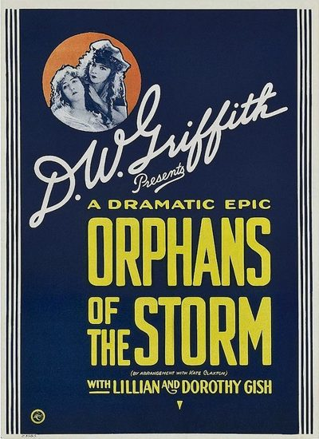

Orphans of the Storm
Studio: United Artists
Starring: Lillian Gish, Dorothy Gish, Joseph Schildkraut
Director: D. W. Griffith
Writer: D. W. Griffith
Producer: D. W. Griffith
Orphans of the Storm is a 1921 American silent melodrama film directed by D. W. Griffith and set in late-18th-century France, before and during the French Revolution. The last Griffith film to feature both Lillian and Dorothy Gish, it was a commercial failure compared to his earlier works, such as The Birth of a Nation (1915), Broken Blossoms (1919) and Way Down East (1920).
Watch Online: Internet Archive
Trivia
- The Two Orphans, the English-language version of the play upon which the movie is based, had been a staple of the actress Kate Claxton.
- Griffith bought out the US distribution rights to the German version so that it could not conflict with the earning potential of his own film.
Previous Showings
2 Runs • 2 Festivals
All runs on record (2):
- February 28, 1998February 1998
- September 15, 2004Summer 2004: Sixty-one Classic Movies, including 10 with Ronald Reagan and 9 Silent Pictures